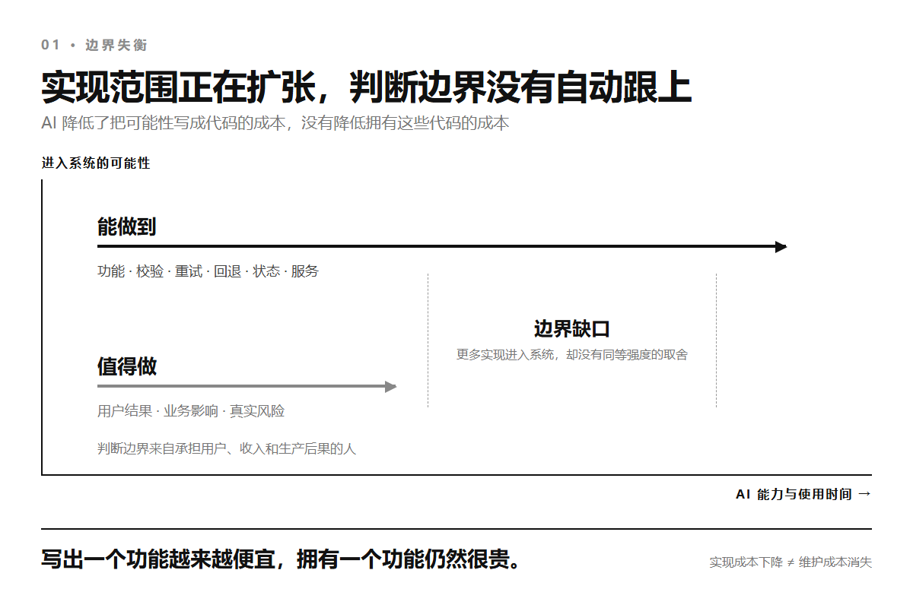
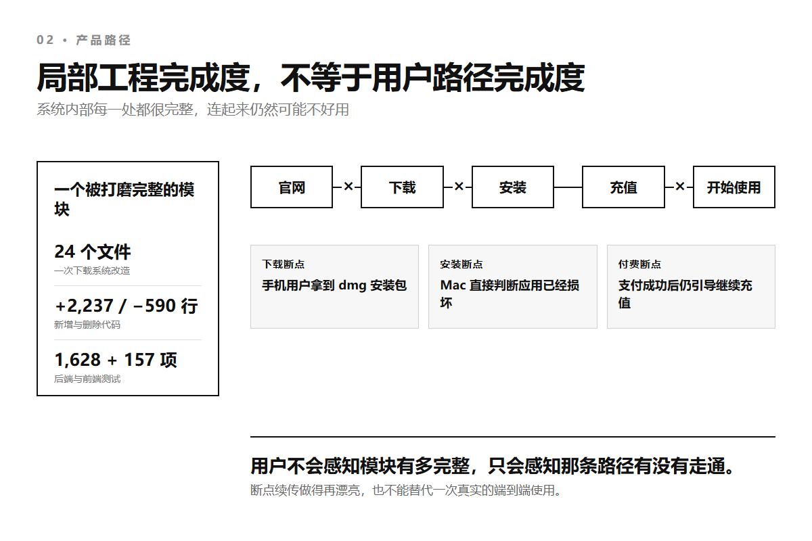
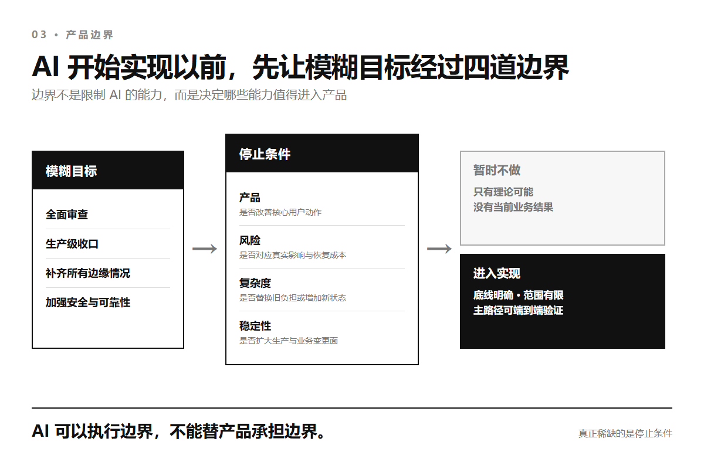

AI 能帮你扩展边界，
但不能替你守住边界
2026 年 9 月 3 日 · AI 工程 · 刘志宇 Joy
把一个真实产品交给 AI 以后，最容易说的一句话是：全面检查一下。
再认真一点，还会补上生产级、覆盖所有边缘情况、把安全和稳定性收口。
AI 会很快找到事情做。
下载没有断点续传，它补上续传、校验、超时、取消和并发锁。
登录有被撞库的可能，它增加设备识别、频率限制、失败锁定和异常告警。
接口偶尔失败，它加入重试、回退、熔断、降级和更多状态。
每一项单独看都合理。
过几天再让它全面检查一次，它还能从新系统里继续找到新的缺口。
产品于是进入一种没有完成时刻的开发。
代码越来越多，测试越来越密，后台越来越完整，用户真正要走的那条路却没有同步变短。
更麻烦的是，系统每增加一层防御，就多一份配置、多一条失败路径、多一块以后必须理解和维护的状态。
最后得到的未必是一堆明显写错的代码。
更常见的是一个每一处都能解释、每一层都有理由、整体却没人再敢改的系统。
AI 擅长把可能变成实现，却不会自动决定哪些可能性根本不该进入产品。
它能帮你不断扩展边界。
守住边界，是另一种工作。
01
实现成本曾经替产品踩刹车
过去，一个功能要改二十个文件、增加三种回退、维护一套新状态，团队会自然停下来算一遍。
用户真的需要吗？
这个风险发生过吗？
现在做，是否比先解决付费、留存或主路径上的断点更重要？
开发成本很高，所以很多想法会在讨论阶段被拒绝。
这种限制当然拖慢了好功能，也在暗中挡住了大量不重要的代码。
AI 把这块天然刹车拆掉了。
它不会因为要改二十个文件就嫌麻烦，也不会因为第十个分支条件和当前收入无关就主动停手。
只要目标仍然是更完整、更稳健、更通用，它就能继续往外扩。
DORA 2025 年的 AI 辅助软件开发报告把 AI 的主要作用概括为放大器。
它会放大一套组织原有的优势，也会放大原有的弱点。
目标清楚时，它把短路径做得更快；目标含糊时，它也会把含糊扩展成完整系统。
一篇讨论 AI 编程与架构的论文做过一个说明性案例。
同一个客服任务，提示词只增加结构化输出和工具调用，生成结果就从 2 个文件、141 行代码变成 6 个文件、827 行代码。
多出来的是校验、重试、回退、工具路由和状态存储。
作者把这种现象称为没有架构师的架构：自然语言里看起来很小的要求，会在实现里变成新的组件、依赖和失败模式。
这个案例每种提示只运行了一次，不能用来证明 AI 必然让代码增长某个比例。
它真正说明的是另一件事。
以前需要开会决定的一层架构，现在可能在一句提示之后就已经写完并通过测试。
代码出现得太快，再问它是否值得存在，反而成了更困难的动作。

图 1 · AI 扩展实现范围的速度，已经超过产品形成判断边界的速度
02
局部越完整，产品可能越失控
我在自己的一个线上产品里遇到过这种反差。
它有网页、Windows 和 macOS 客户端、充值支付、模型路由、管理后台，还有完整的发布与更新流程。
不到一个月，AI 协作产生了 96 个提交，新增 20,614 行，删除 62,362 行，前后碰过 496 个文件。
删除量的大头来自一次旧客户端退役，所以这些数字不能证明代码膨胀。
它们能证明的是，AI 已经可以在很短时间里推动一个真实产品的大面积改写。
其中一次任务来自一个很具体的问题。
用户在客户端下载外部工具时切换页面，再回来，文件有时会卡住。
AI 很快找到根因。
下载状态只存在页面组件里，页面关掉后后台任务还在继续，用户再次点击会让两个任务同时写同一个文件。
旧实现也没有超时、不能取消、不能续传，两个下载入口还复制了相似代码。
这些判断都对。
AI 最后重做了一套统一下载系统，加入进程级任务中心、并发锁、取消、停滞超时、断点续传、文件校验和占用回退。
这次改动碰了 24 个文件，新增 2,237 行，删除 590 行。
后端 1,628 项测试和前端 157 项测试全部通过。
我不能把这些代码简单叫作垃圾。
它解决了真实问题，结构也比两套复制的下载逻辑更干净。
问题出现在我把视线从下载模块移回整个产品以后。
同一时期，iPhone 用户打开官网会被识别成 Mac，首屏按钮让他下载 dmg。
Mac 安装包的签名方式不对，系统直接判断应用已经损坏，而官网给出的放行教程根本不会生效。
账户余额已经为零，客户端仍然显示线路已连接。
用户刚付完钱，成功页最显眼的按钮不是开始使用，而是继续充值。
一个上百兆的安装包可以在断网后精确续传，用户却可能从一开始就拿到完全不能安装的文件。
工程上最复杂的路被认真铺平了，真正的用户入口仍然选错了。

图 2 · 模块内部全部通过检查，下载、安装、付费与开始使用之间仍然可以断开
这种产品不是没有边界条件。
恰恰相反，它的每个模块都堆了很多边界条件。
它缺的是整个产品的边界：哪条用户路径最重要，哪个失败此刻最贵，什么能力即使能做也暂时不做。
03
过度安全，也是没有边界
过度工程不只表现为微服务太多、抽象太早或框架太重。
它还有一种更难反对的形式：为了安全和可靠，再多做一点防御。
AI 尤其擅长列举可能性。
一次请求可能超时，重试时可能重复执行，回退可能再次失败，错误信息可能泄露细节，用户输入可能包含异常内容，管理员账号可能被盗。
这些都是真的。
但可能发生，不等于现在值得为它增加一套系统。
风险必须同时看发生概率、影响范围、恢复成本，以及它和当前业务的关系。
没有这些权重，AI 会把每一种理论风险都当成同等重要的工程任务。
结果可能是一个可逆操作也要三次确认，一次偶发失败套上五层重试，一段普通输入被十几条规则拒绝，用户被安全策略锁住以后却没有可靠的恢复入口。
安全控件更多，实际安全结果未必更好。
NIST 的可用安全研究明确提醒，过于严格的流程会让系统难以使用，用户甚至会主动绕开安全措施。
CISA 的安全设计原则也不是要求把更多配置和判断交给用户，而是要求厂商承担责任，让最容易走的路同时成为安全的路。
可靠性同样不是越高越好。
Google SRE 关于风险的章节直接把 100% 可靠性称为普通服务通常不该追求的目标。
继续增加一个 9，会消耗基础设施，也会消耗本可以用于用户功能、技术债和运营成本的工程时间。
Google 用服务目标和错误预算平衡发布速度与可靠性，因为可靠到什么程度首先是产品问题，不是一个脱离业务的技术竞赛。
支付不能重复入账，权限不能越权，用户数据必须有备份，这些是真正的底线。
它们应该由幂等约束、最小权限、安全默认值和可验证的恢复流程守住。
另一边，给每个可逆动作增加确认、为没有出现过的规模预建容灾、用无限重试掩盖真实故障，只是在扩大攻击面和故障面。
安全不是控件越多，可靠也不是分支越多。
系统真正要守住的，是用户能够安全完成核心动作，业务在失败以后能够恢复。
04
测试全绿，也可能正在长成屎山
AI 生成的系统最容易给人一种确定感。
它写代码，也补测试；发现一个异常，再为异常增加一个分支和一组用例。
当前需求被证明满足以后，这次任务就显示完成。
但测试只证明已知输入得到已知结果，不会自动证明这套结构适合下一次变化。
2026 年的 SlopCodeBench专门观察编程智能体在需求逐轮变化时，如何继续扩展自己此前写下的代码。
论文更新版包含 36 个问题和 196 个检查点。
在它的度量下，77% 的轨迹出现结构侵蚀，75.5% 的轨迹冗余度上升；与 473 个开源 Python 仓库相比，智能体代码的冗余度是 2.3 倍，结构侵蚀度是 2 倍。
这是一份预印本，也是受控基准，不能把比例直接套到所有生产项目。
但它抓住了单次评测经常漏掉的问题。
代码可以一直通过当前测试，同时把更多分支塞进已经很复杂的函数，把相似逻辑复制到新路径，再用新的特殊情况补住昨天的设计。
系统没有在某一天突然变坏。
它只是每次都以最小代价通过眼前检查，直到下一次改动必须同时理解几十个局部正确的决定。
这就是很多 AI 项目最后变成屎山的过程。
不是因为模型每次都写错，而是因为没有任何外部机制要求它为整个系统保持简单。
只在提示词里加一句保持代码整洁也不够。
SlopCodeBench 的提示干预能改善初始代码，却没有阻止后续迭代中的退化。
另一项重构研究 CodeTaste也发现，模型拿到明确的重构要求时执行得不错，只给宽泛的改进范围时，却经常找不到人类维护者真正会选的方向。
AI 可以很好地完成删什么。
决定什么应该被删，仍然是另一种判断。
05
工程稳定，可能正在伤害业务稳定
产品里的稳定至少有三层。
代码层关心函数有没有异常、请求能不能重试、测试是否通过。
运行层关心发布会不会中断服务、数据能不能恢复、故障能不能定位。
业务层关心用户能不能注册、付费、开始使用，以及一条正在赚钱的主路径会不会被下一次优化改断。
AI 最容易看见第一层，因为代码和测试就在眼前。
它也能通过日志、监控和部署配置帮助第二层。
第三层需要知道一次失败损失的是几分钟计算、一个新用户，还是一笔已经支付的订单。
这些后果不在代码里自然出现。
当全面加固变成持续目标，稳定的业务路径会被频繁触碰。
一个重试机制可能改变请求时序，一个统一状态中心可能改变所有页面，一个更严格的权限模型可能让老用户失去入口，一个新服务会让每次部署多一个必须正常工作的依赖。
每个修改都在提高某个局部指标，整条业务链却要承受更多联动变化。
Martin Fowler 在 YAGNI里把提前构建能力的代价拆成建设成本、延迟价值、持续携带和未来修复。
AI 大幅降低的是第一项。
用户等待更久、团队持续理解额外结构、未来为错误抽象返工，这些成本没有一起消失。
写出一个功能越来越便宜，拥有一个功能仍然很贵。
如果每次工程审查都让系统得到更多能力，却没有删掉旧路径、减少状态或改善核心业务结果，所谓稳定最终只存在于测试报告里。
06
AI 可以执行边界，不能替产品承担边界
我后来改变了给 AI 任务的方式。
目标不再是全面看看还能补什么，而是先固定一个用户此刻要完成的动作。
下载以后能打开，付费以后能开始用，线路坏了能看见真实原因，也知道下一步去哪里。
这条主路径之外的能力会明确写成暂时不做。
实现之前，AI 先列出方案会增加哪些状态、服务、数据表、依赖和失败路径。
新结构不能因为写得出来就默认进入系统。
它要么替换一段旧逻辑，要么解决一个已经发生的风险，要么直接改善当前最重要的用户结果。
安全问题也不再按可能性数量排队。
支付、身份、权限、数据和密钥有不可突破的底线，底线写进权限、约束和自动检查。
其他风险按真实使用、业务影响与恢复成本决定投入，不把防御步骤转嫁给用户。
验收顺序也变了。
我会先从官网点一次下载，用新账户完成付费，再打开工具发出第一条请求。
整条路走通以后，测试负责保证它不会再次断掉。
这样做并不是把 AI 赶出决策。
它很适合反过来挑战方案，找遗漏，估算复杂度，执行已经声明的规则，也能在越界时拒绝修改。
AI 能守住一条已经写清的边界，却不能替承担后果的人发明这条边界。

图 3 · 模糊目标先经过产品价值、真实风险、复杂度与稳定性边界，再进入实现
这个项目后来最明显的几次改善都很小。
手机用户不再拿到 Mac 安装包，零余额不再显示假连接，支付成功以后主按钮变成开始使用，外部工具不再承诺做不到的自动配置。
AI 仍然可以继续列出几十种加强方案。
产品第一次有了一个比方案更稳定的东西：一条不会被下一轮全面优化冲散的用户主路径。
— 完 —
#AI开发 #产品边界 #软件工程
本文讨论 AI 编程如何放大没有停止条件的工程投入。安全、权限、数据与恢复底线仍需严格保留；批评对象是脱离真实风险、业务结果和用户路径的防御堆叠。资料核对时间：2026-09-03。
参考资料
· DORA｜State of AI-assisted Software Development 2025
https://dora.dev/research/2025/dora-report/
· Architecture Without Architects: How AI Coding Agents Shape Software Architecture
https://arxiv.org/abs/2604.04990
· Google SRE｜Embracing Risk
https://sre.google/sre-book/embracing-risk/
· NIST｜Usable Cybersecurity Research
https://csrc.nist.gov/news/2019/usable-cybersecurity-research-at-nist
· CISA｜How Software Manufacturers Can Protect Customers by Eliminating Default Passwords
https://www.cisa.gov/sites/default/files/2023-12/SbD-Alert-How-Software-Manufacturers-Can-Protect-Customers-by-Eliminating-Default-Passwords-508c_0.pdf
· SlopCodeBench: Benchmarking How Coding Agents Degrade Over Long-Horizon Iterative Tasks
https://arxiv.org/abs/2603.24755
· CodeTaste: Can LLMs Generate Human-Level Code Refactorings?
https://arxiv.org/abs/2603.04177
· Martin Fowler｜Yagni
https://martinfowler.com/bliki/Yagni.html